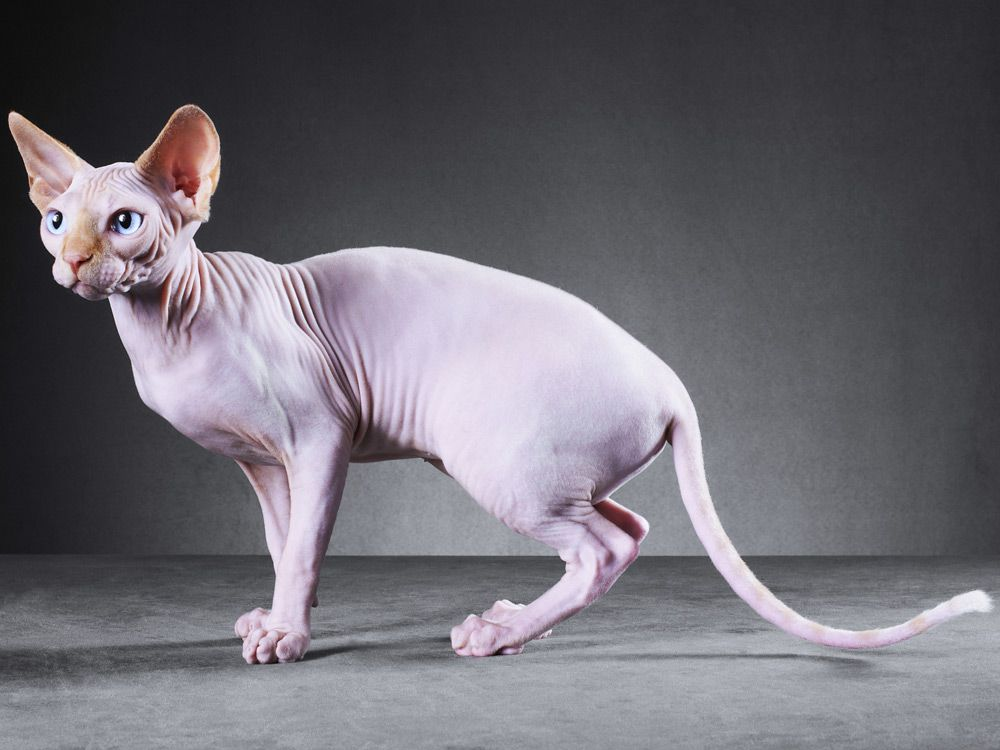
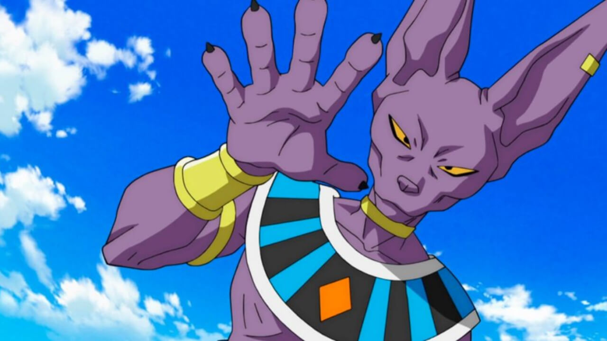
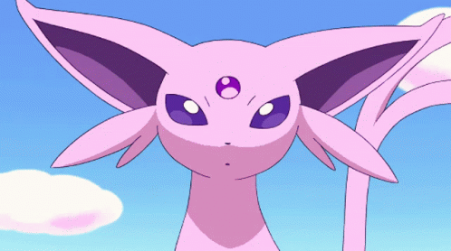
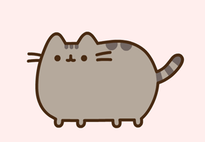

GATOS EGIPCIOS
| Estos gatos, también conocidos como sphynx o esfinge, se caracterizan sobre todo por la ausencia de pelo pero también por su delgado y elegante cuerpo. A pesar de tener una expresión enfadada, en realidad son unos animales extremadamente cariñosos, amables y muy dulces. Asimismo, son unos compañeros muy inteligentes, curiosos y muy enérgicos, cualidades que los convierten en la mascota perfecta para tener en familias con niños o para compartir casa con otros animales. |  |
| ORIGEN |
| El origen de los gatos esfinge, phynx o gato egipcio no está muy claro. Su existencia se remonta al periodo de los aztecas, quienes habrían tenido gatos sin pelo hace muchos siglos. Los primeros registros de esta raza se encontraron a principios del siglo XX en Nuevo México. Allí nacieron dos gatitos sin pelo que no se emparejaron porque eran hermanos. Estos mininos recibieron el nombre de «nuevos gatos mexicanos sin pelo». Sin embargo, estos pequeños felinos no están relacionados con los esfinges actuales. El sphynx es de origen canadiense. En 1966 una gata doméstica parió un gatito negro sin pelo y, con él, comenzó la cría de una nueva raza. Una señora adquirió ese peculiar gatito, llamado Prune, y a su madre, Elisabeth, a los que cruzó pasado un año para obtener más descendientes. De esa camada nacieron 7 gatitos, incluidos 2 machos y 2 hembras sin pelo. Estos mininos tuvieron graves problemas de salud: su sistema inmunitario no era capaz de desarrollarse adecuadamente. Por esta razón, la cría de esta raza llegó casi a su fin. No obstante, a mediados de los años 70 se encontraron otros ejemplares de estos «gatos desnudos» y la cría siguió adelante. Tan pronto como en 1971, el gato egipcio ya fue reconocido como raza. |
| CUIDADOS |
| Alimentacion: No necesita comer nada diferente a otros gatos pero sí es importante que tenga una dieta equilibrada y que no le dejemos comer comida casera. ¡Por cierto! A los gatos egipcios les encanta comer así que ten cuidado con lo que dejas por casa porque lo convertirá en su almuerzo. |
| Piel: Como no tienen pelo, la temperatura corporal de los estos gatos es hasta cuatro grados superior a la de otros mininos. En invierno es importante que les proporcionemos mantas donde esconderse y dormir calentitos o incluso jerséis especiales para ellos ya que si no podrían enfermar. |
| Cuidados del sol: Como a todos los mininos, a los gatos egipcios les encanta tumbarse al sol pero hay que tener mucho cuidado ya que pueden hacerse graves quemaduras. |
| REFERENTES EN TV |
| Dragon Ball Super |
| Bills es actualmente uno de los personajes más emblemáticos de Dragon Ball Super. Hizo su primera aparición en 'La batalla de los dioses' y esta es la historia detrás de su creación. |
| 'Dragon Ball Z: La batalla de los dioses' fue el inicio de lo que sería las nuevas sagas de Dragon Ball Super. Aquí se presentó por primera vez a los Dioses de la Destrucción con el poderoso Bills o Beerus, nombre original en japón. Aunque muchos ya sabían que el personaje estaba inspirado en un gato esfinge, siempre había cierta duda sobre su raza. Algunos pensaban que se trataba de un chacal u otro animal similar. Pero las dudas han sido despejadas por el libro de aniversario de Dragon Ball Super. El encargado de darle la imagen a Bills es el pequeño Debo,un gatito de la raza esfinge del mismo Akira Toriyama. La mascota del creador de Goku y toda la historia de Dragon Ball le dio forma al ser más poderoso del Universo 7. Según la publicación del libro, este pequeño animalito es la mascota favorita del mangaka. Se sabe que él ha sido gran amante de los animales, hace unos años posó para un periódico con otro de sus felinos llamado Koge. |
|  |
| Pokemon |
| A diferencia de la mayoría de los Pokémon, Espeon tiene características similares tanto a los animales como a las criaturas míticas. Se dice que Espeon comparte rasgos con caracales, gatos Sphynx y zorros fennec, así como con una bestia mítica conocida como carbunclo, que se dice que se encontró en América Latina además de tener la joya en la cabeza. Por último, se dice que el Pokémon tiene características similares a otro mito conocido como Nekomata. |
|  |
Da clic en el gatito de abajo para ver más imágenes de gatos egipcios /ᐠ｡ꞈ｡ᐟ\
